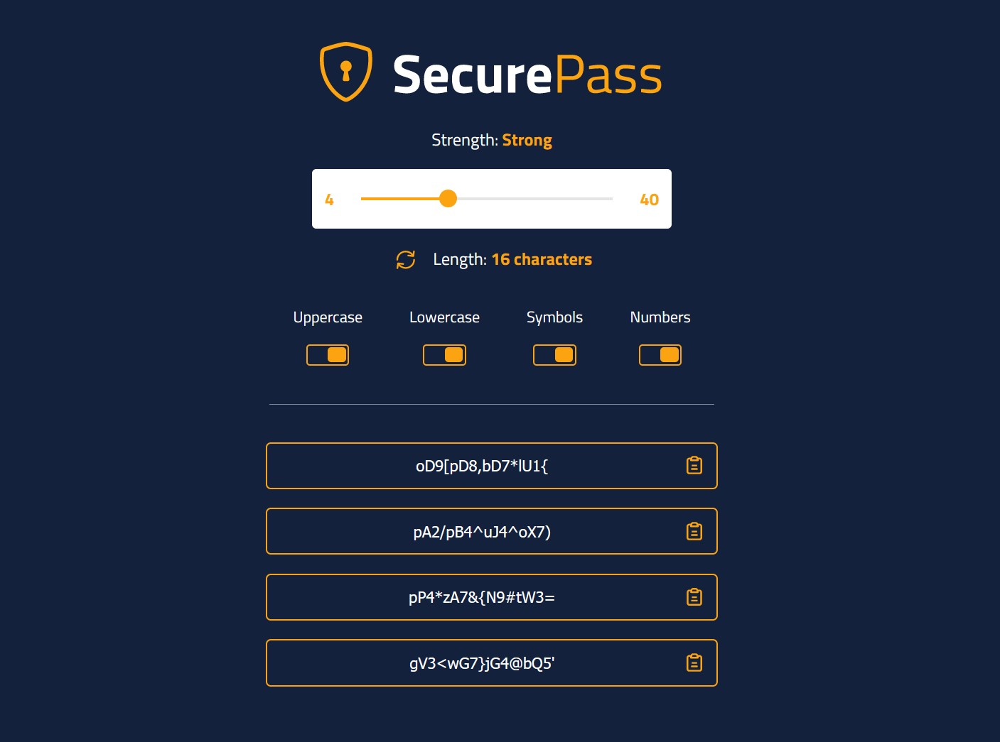

The objective for this project was to create a password generator that gave the user all of the features they could need to create a unique, secure and customizable password. However, I did not want it to be just another password generator.
In order to achieve that, this project needed to accomplish 3 things. The first was that it needed to have an easy to use and beautiful user interface. The next was that it needed to possess different settings to allow the user to customize the result. Lastly, it needed to feel premium and frictionless to use.
SecurePass
HTML5
SASS
JavaScript
A simple, yet robust password generator that allows the user to choose the length, character parameters and has a 1-click copy feature.

The first thing I did was hop into Figma and started designing a low-fidelity interface. After I got what I wanted out of the general layout, I started to add details. I decided I wanted to include toggle switches instead of plain old checkboxes. I also decided to use a range slider to choose the length as that is the most user-friendly input.
Once I nailed down the design, I started the development phase. I made sure to replicate the user experience I had in mind while designing, down to the small details. I decided to add in small features like the strength rating and the 1-click copy feature to reduce user-friction.
The result was something that achieved the 3 goals that I set out to achieve. The user interface was easy to use and eye-catching. The functionalities allowed the user to create a personalized, secure password. And finally, it stood out from the thousands of other password generator apps out there.
Overall, I’m very proud of this project. I am still thinking of ways to improve it, but as it stands now it is a great representation of my skills and provides value to all of its potential users.